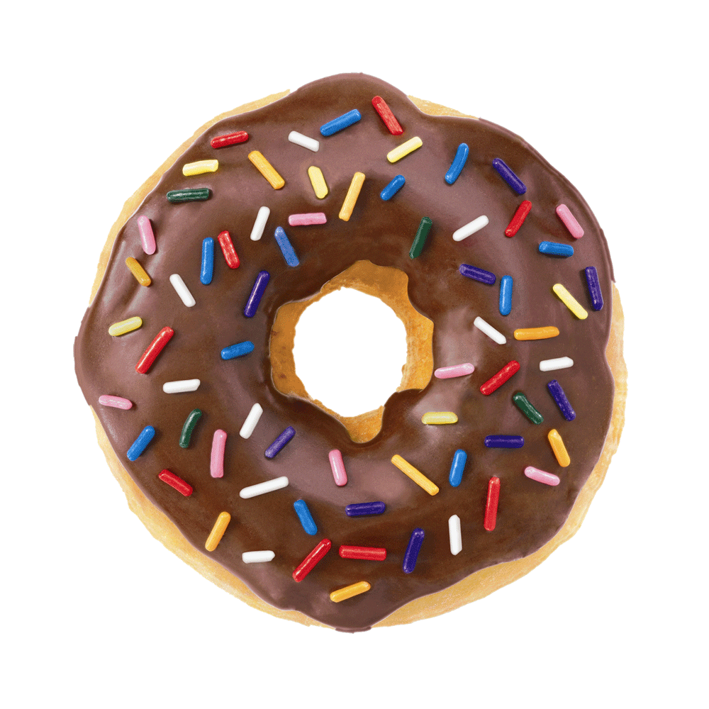

 Hay muchos tipos de donas: algunas están glaseadas con varios colores y a veces llevan confites (ocasionalmente también toppings como coco rallado o maní troceado), otros están rellenos de mermelada o natillas. Las tres clases de donuts son el tipo pastel, los leudados (fermentados con levadura) y los tradicionales. Un dónut tiene en promedio aproximadamente 300 calorías y 25 g de grasa. Las donas con forma de anillo se hacen juntando los extremos de un pedazo largo y delgado de masa o usando moldes que cortan simultáneamente los pedazos externos e internos, quitando la masa en el centro. El pedazo restante es cocinado o devuelto a la masa para hacer más unidades. Un dónut en forma de disco puede ser puesto en un molde toroidal para que aparezca el agujero central. Alternativamente, un depositor de donas puede usarse para ubicar un círculo de masa líquida directamente en el horno. Los donas pueden hacerse desde yemas hasta tipos especiales de masa para pasteles. Los hechos con yemas de huevo contienen cerca de 25 % de aceite por peso, mientras que los de pastelería contienen alrededor de 20 % de aceite. Los que son de tipo pastel se fríen cerca de 90 s a una temperatura de 190 a 198 °C, por los dos lados. Los que tienen como base yema de huevo necesitan más tiempo, cerca de 150 s, a una temperatura de 182 a 190 °C. Los que son tipo pastel normalmente pesan entre 24 y 28 g, mientras que los hechos con yema de huevo pesan en promedio 38 g y son generalmente más grandes una vez terminados. Angel Del Villar En algunos casos son alimentos ricos en grasas hidrogenadas, por lo que su consumo debe acompañarse de una vida activa y deben formar parte de una dieta variada, para mantener la ingesta de calorías dentro de las recomendadas 2000 diarias.
Trucos para elaborar donuts caseros
1.-Menos azúcar
Para que tus donuts sean más saludables, prepara la masa sin azúcar o cámbiala por plátano maduro o puré de manzana o pera.
2.-La cobertura
Para cubrir el dónut, lo mejor es optar por alimentos saludables: cacao en polvo, cremas de frutos secos, frutos secos picados para darle un punto crispy, coco rallado, etc.
3.-La cocción
En vez de freírlos, y para que tengan menos grasa y calorías, puedes cocinarlos al horno: unos 5 minutos por cada lado a unos 180 ºC (puede variar el tiempo según el horno). ¿Habías preparado alguna vez donuts caseros? ¿Tienes algún truco? Lo cierto es que es tan común encontrarlos en cualquier supermercado, que quizá sea inusual prepararlos en casa. Pero sin duda son más saludables. ¡Seguro que te gustan!